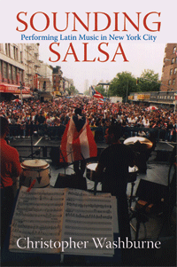

<body bgcolor="#FFFFFF" text="#000000" link="#0000FF" vlink="#CC0000" alink="#CC0000"><center><hr width="350" size="1" align="center" noshade>Inside New York City’s vibrant salsa scene<hr width="350" size="1" align="center" noshade><p><a href="https://cdcshoppingcart.uchicago.edu/Cart/ChicagoBook.aspx?ISBN=9781592133154&&PRESS=temple" target="_top">Buy this book!</a> | <a href="https://cdcshoppingcart.uchicago.edu/Cart/Cart.aspx?PRESS=temple" target="_top">View Cart</a> | <a href="https://cdcshoppingcart.uchicago.edu/Cart/Cart.aspx?PRESS=temple" target="_top">Check Out</a></p><p></p></center><!--none//--><h1>Sounding Salsa</h1>
<H2>Performing Latin Music in New York City</H2>
<h3>Christopher Washburne</h3>
<P>cloth 1592133150 $90.50, Jun 08, <FONT COLOR=#990033>Available</FONT>
<br>paper 1592133169 $31.95, Jun 08, <FONT COLOR=#990033>Available</FONT>
<BR> 272 pp
6x9
8&nbsp;figures 19&nbsp;halftones
</P><BLOCKQUOTE><I>"Washburne shows the reader in myriad ways how and why salseros have become the ‘migrant workers’ of the music world. His vantage point as both practicing musician and scholar is unique, giving us a privileged view of musical performance as seen from the bandstand. This is a very successful and engaging sociology and ethnomusicology of modern salsa"</I>
<br>&#151<b>Ruth Glasser</b>, Lecturer, Urban and Community Studies Program, University of Connecticut, author of <i>My Music is My Flag: Puerto Rican Musicians and Their New York Communities, 1917-1940</i></I></BLOCKQUOTE>
<p>This ethnographic journey into the New York salsa scene of the 1990s is the first of its kind. Written by a musical insider, and from the perspective of salsa musicians, <i>Sounding Salsa</i> is a pioneering study that offers detailed accounts of these musicians grappling with intercultural tensions and commercial pressures. Christopher Washburne, himself an accomplished salsa musician, examines the organizational structures, recording processes, rehearsing, and gigging of salsa bands, paying particular attention to how they created a sense of community, privileged “the people” over artistic and commercial concerns, and incited cultural pride during performances.
<p><i>Sounding Salsa</i> addresses a range of issues, musical and social. Musically, Washburne examines sound structure, salsa aesthetics, and performance practice, along with the influences of Puerto Rican music. Socially, he considers the roles of the illicit drug trade, gender, and violence in shaping the salsa experience. Highly readable, <i>Sounding Salsa</i> offers a behind-the-scenes perspective on a musical movement that became a social phenomenon.
<BR>&nbsp;<h2>Excerpt</h2><P>Excerpt available at <a href="http://www.temple.edu/tempress">www.temple.edu/tempress</a></p>
<BR>&nbsp;<h2>Reviews</h2>
<p><I>"Christopher Washburne has drawn a fascinating portrait of salsa’s musical and business practices. As a professional trombonist for top salsa bands, he combines the intimate knowledge of an observing participant with the critical distance of scholarly analysis. I was impressed with his deft interpretation of controversial issues in studying salsa."</i>
<br>&#151<b>Jorge Duany</b>, University of Puerto Rico, Río Piedras, author of <i>The Puerto Rican Nation on the Move: Identities on the Island and in the United States</i>
<p>"Sounding Salsa<i> provides an insight into the lives and experiences of salsa musicians. Washburne has done thorough research and the book is a comprehensive historical account of Salsa in New York in the 1990s."</i>
<br>&#151<b>Patria Roman-Velazquez</b>, City University, London
<p><i>"Washburne does a good job of chronicling the second-generation surge of the popular Latin dance music salsa in the US, which occurred in New York City in the 1990s. The author bases his discussion on an impressive ethnographic methodology and on his own involvement with salsa as a performer. He introduces the reader to the major figures in the movement, provides glimpses of the music itself, and describes the broader cultural and sociological issues that affected the art form and its practitioners. The introduction provides a good overview of the historical development of salsa in the 1960s-70s and establishes a context for the discussion that follows....Summing Up: Recommended."</i> <br>&#151;<b><i>Choice</i></b>
<p><i>"[Washburne] offers a no-holds-barred, insider glimpse at 'how salsa was made' in New York City in the 1990s. By challenging conventional narratives about salsa's development and taking on contentious issues in its history, including drugs, violence and illegitimate business practices, </i>Sounding Salsa<i> should make a lot of folks look twice at a critical yet neglected moment in the industry's development. Washburne's ethnography of behind-the-scenes backstories, documented from his own vantage point on the bandstand, is the best quick read I've found on the industry's history and inner workings, supplemented by deep industry knowledge that fills in many ellipses in histories written mainly from the point of view of the consumer/ critic. While it offers musicological explanations on salsa's nuts and bolts technical aspects, such as clave, it's also an accessible guide to newcomers who may have wondered: What are those instruments? And why are all those guys wearing the same suits?"</i><br>&#151;<b><i>IndyWeek</i></b>
<p><i>"Washburne is a very fine and respected jazz trombonist.... [</i>Sounding Salsa<i>] is a well-researched and assiduously documented work of history, written by an ethnomusicologist with impeccable academic credentials.... It would be hard to imagine a person better qualified on the subject.... His standing as a professional </i>salsero<i> gives him access to information denied other researchers. And he takes advantage, gleaning enough material to tell a fascinating tale.... The book's most illuminating passages center on the musicians' own observations and comments, made directly to Washburne and salted liberally throughout the text. Such intimate reflections would only have been revealed to someone who'd earned their deepest trust and respect—another musician, for instance."</i> <br>&#151;<b><i>Jazz Notes</i></b>
<p><i>"A professional trombonist, Washburne writes from the vantage point of a practising musician as well as a scholar, offering a dynamic view of salsa as seen from the bandstand over an eighteen-year period during which he played with key orchestras of Tito Puento, Ray Barreto, Celia Cruz, Pete 'El Conde' Rodriguez and Hector Lavoe, among many others.... Apart from its undoubted academic merits, the book convinces through its insider-out perspective, incisive and evocative scenarios, and the way analysis and theory are embedded within its ethnography. In six highly readable chapters, the salsa scene in all its richnesss is described, unpicked, critiqued and celebrated....Washburne has written a book that is as entertaining, informative, and provocative as it is ground-breaking." </i> <br>&#151;<b><i>Popular Music</i></b>
<p><i>"The book gives a nuts-and-bolts description of what it means to record and perform in a salsa band, and it also relates some inside stories that have become legend to those in the scene.... The book really breaks new ground... Washburne's book is a welcome addition to the conversation." </i> <br>&#151;<b><i>The Journal of American Folklore</i></b>
<p><i>"A combination of a personal memoir of his experiences and an ethnographic study of salsa…. The book is informative, quickly paced and interesting….The section regarding the relationship of salsa to various specific nationalities and Latin Americans as a broader group is particularly insightful." </i> <br>&#151;<b><i>Jazz Times</i></b>
<p><i>"Washburne deserves credit for his unvarnished description of the business practices and working conditions salsa musicians face….Washburne is most revealing when writing about his personal experiences as an eye-witness to violence when playing with salsa bands.... Clearly, Washburne loves the music and respects his fellow musicians." </i> <br>&#151;<b><i>J.B. Spins </i></b>
<BR>&nbsp;<h2>Contents</h2><P>
<br>Acknowledgements
<br> Introduction: Salsa in New York
<br>1. Salsa Bands and the Performance of Pueble
<br>2. "The music is so good, but the scene is pure dues!": Salsa Musicians
<br>3. "Play like there's a gun to your head!": The Aesthetics and Performance Practice of Sounding Violence in Salsa
<br>4. New York Salsa and Drugs: Aesthetics, Performance Practice, Governmental Policy, and the Illicit Drug Trade
<br>5. La India and the Masquerading of Gender on the Salsa Scene
<br>6. "They are going to hear this in Puerto Rico. It has got to be good!": The Sound and Style of Salsa
<br>Appendix 1
<br>Appendix 2
<br> Notes
<br>Bibliographic References
<br>Index
</P><BR>&nbsp;<H2>About the Author(s)</H2>
<P><b>Christopher Washburne</b> is an Associate Professor of Ethnomusicology at Columbia University and the founder and Director of Columbia's Louis Armstrong Jazz Performance Program. He has recorded over 150 albums and performed with numerous Latin musicians including Tito Puente, Eddie Palmieri, Celia Cruz, Marc Anthony, and Rubén Blades. He leads his own band SYOTOS, a popular Latin Jazz group in New York.</P>
<BR><H2>Subject Categories</H2>
<p><A HREF="/tempress/music.html" TARGET="_top">Music and Dance</a>
<BR><A HREF="/tempress/latino.html" TARGET="_top">Latino/a Studies</a>
<BR><A HREF="/tempress/urban.html" TARGET="_top">Urban Studies</a>
</p>
<BR><h2 class="inpageheading">In the series</H2>
<P><I><a href="http://www.temple.edu/tempress/latin_music.html" onMouseOver="window.status='Click for other books in this series!'; return true;" onMouseOut="window.status=''; return true;" target="_top">Studies in Latin American and Caribbean Music</a></i>, edited by Peter Manuel.
</p><p><i>Studies in Latin American and Caribbean Music</i>, edited by Peter Manuel, aims to present interdisciplinary studies in the traditional and contemporary musics of Latin America and the Caribbean.</p>
<p align="center"><a href="https://cdcshoppingcart.uchicago.edu/Cart/ChicagoBook.aspx?ISBN=9781592133154&&PRESS=temple" target="_top">Buy this book!</a> | <a href="https://cdcshoppingcart.uchicago.edu/Cart/Cart.aspx?PRESS=temple" target="_top">View Cart</a> | <a href="https://cdcshoppingcart.uchicago.edu/Cart/Cart.aspx?PRESS=temple" target="_top">Check Out</a></p><p><font face="Arial" size="1"><a href="copyright.html" onMouseOver="window.status='Web Copyright Policy';return true;" onMouseOut="window.status=''" title="Web Copyright Policy">&copy;</a> 2015 <a href="http://www.temple.edu" target="new" onMouseOver="window.status='Link to Temple University home page';return true;" onMouseOut="window.status=''" title="Link to Temple University home page">Temple University</a>. All Rights Reserved. http://www.temple.edu/tempress/titles/1557_reg.html</font></p>